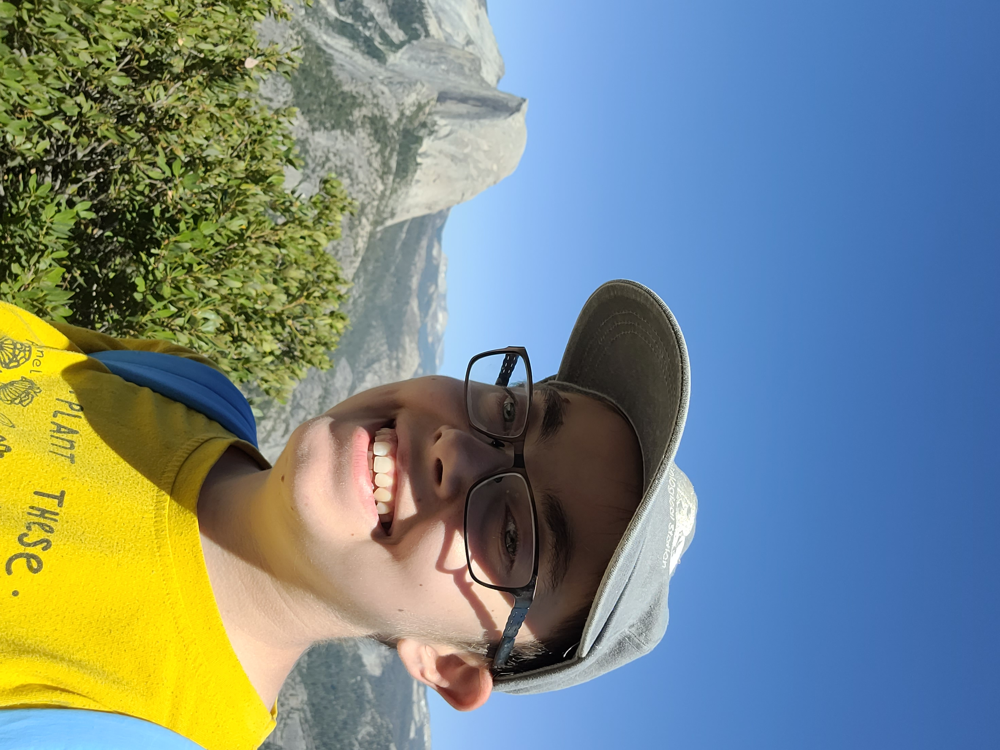

Personal Interests
- Violin
- I have played violin since I was 4 years old. I love playing with other people, especially in chamber groups and orchestras. I've been involved in music groups such as the Napa Valley Youth Symphony Orchestra, the SMC Chamber Musicians, and the UNL Campus Orchestra.
- My favorite piece to play is Bach's Concerto for Two Violins in D minor, BWV 1043.
- Video games
- Video games are something I play to relax. I particularly enjoy playing Stardew Valley, The Legend of Zelda: Breath of the Wild and Tears of the Kingdom, as well as the Playstation Spider-Man games.
- Knitting/Crocheting
- I have been crocheting since a young age. I have recently re-taught myself how to knit, and I am learning how to knit a sock!
- Walks
- I enjoy going on walks around my neighborhood. I count the number of dogs I see every day. Looking at flowers is something that also brings me joy!

Go back to the main page
Note: This page was compiled as an example personal webpage for students in my CS 102 course at Saint Mary's College of California.